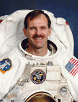

Lyndon B. Johnson Space Center
Houston, Texas 77058
|
National Aeronautics and Space Administration Lyndon B. Johnson Space Center Houston, Texas 77058 |
 |
Biographical Data |
||
Steven L. Smith
NASA International Space Station Program Liaison to the European Space Agency
PERSONAL DATA: Born December 30, 1958, in Phoenix, Arizona, but considers San Jose, California, to be his hometown. Married. He enjoys flying, scuba diving, basketball, camping and traveling.
EDUCATION: Graduated from Leland High School, San Jose, California, in 1977; received a Bachelor of Science degree in Electrical Engineering in 1981; a Master of Science degree in Electrical Engineering in 1982 and a Master's degree in Business Administration in 1987. All three degrees are from Stanford University.
SPECIAL HONORS: NASA Distinguished Service Medals (two), NASA Outstanding Leadership Medal, NASA Space Flight Medal, NASA Exceptional Service Medal, IBM Outstanding Technical Achievement Award and IBM Outstanding Community Service Award. Seven-time high school and collegiate All-American in swimming and water polo. Two-time National Collegiate Athletic Association (NCAA) Champion at Stanford in water polo. Captain of the 1980 NCAA Championship team. Former board member of Special Olympics Texas. Former board member, The Cousteau Society.
EXPERIENCE: Smith worked for IBM in the Large Scale Integration (semiconductor) Technology Group in San Jose as a technical group lead from 1982 until 1985. Following a leave to pursue graduate studies, Smith returned to IBM's Hardware and Systems Management Group as a product manager until 1989.
NASA EXPERIENCE: Smith is a veteran of four space flights covering 16 million miles and seven space walks totaling 49 hours and 25 minutes. Smith's spacewalk time places him in the top ten on the all-time American and World spacewalk duration lists. He joined NASA in 1989 in the Mission Operations Directorate. As a Payload Officer, his duties included preflight payload integration and real-time flight controller support in Mission Control. He was selected as an astronaut candidate by NASA in 1992 and then completed one year of astronaut candidate training.
In September 1993, Smith became the first member of the 1992 astronaut class to receive a flight assignment. He has served as the Astronaut Office representative for the space shuttle main engines, the solid rocket boosters, the external tank, and shuttle safety. Smith was also assigned to duties at the Kennedy Space Center for a year and a half as a member of the astronaut support team. The team was responsible for space shuttle prelaunch vehicle checkout, crew ingress and strap-in prior to launch and crew egress post landing. After STS-103, he served as the Deputy Chief Astronaut for a year.
Smith served as a Mission Specialist aboard the Space Shuttle Endeavour on Mission STS-68 in September 1994. His responsibilities were split between shuttle systems and Space Radar Lab 2 (SRL-2), the flight's primary payload. Smith was one of two crewmen trained to perform a spacewalk, had one been required. Endeavour circled Earth 183 times and traveled 4.7 million miles during the 11-day flight.
Smith performed three spacewalks as a member of the February 1997 STS-82 Discovery crew, which serviced the Hubble Space Telescope (HST). The crew completed five spacewalks to improve the scientific capability of the telescope and to replace degraded equipment. The flight orbited the Earth 150 times, covering 4.1 million miles during the 10-day flight.
Smith returned to the Hubble Space Telescope and performed two spacewalks as the Payload Commander for STS-103 in December 1999. The crew performed three spacewalks to return Hubble to science operations with several upgraded subsystems. STS-103 orbited the Earth 120 times, covering 3.2 million miles in just under 8 days.
As the lead spacewalker of the April 2002 STS-110 Atlantis crew, which installed the S0 (S-Zero) Truss on the International Space Station (ISS), Smith performed two of the flight's four spacewalks. The crew spent a week in joint operations with the ISS Expedition 4 crew. The STS-110 mission covered 4.5 million miles during 171 orbits in just under 11 days.
Smith currently serves as the NASA International Space Station Program Liaison to the European Space Agency.
DECEMBER 2013